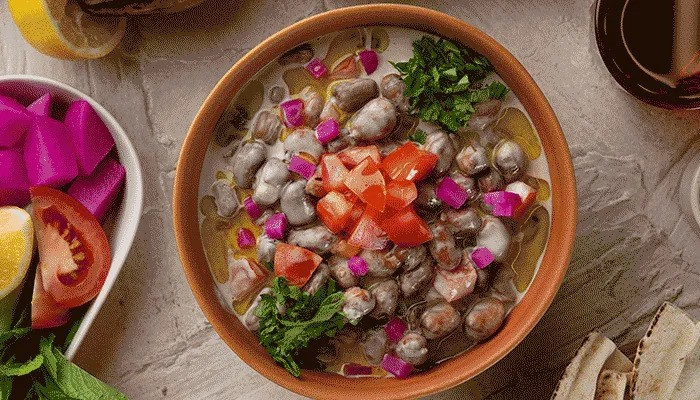

Fava Beans in Tahini Sauce

Next to falafel, there is fava beans for breakfast (I will serve it with tahini sauce).
If you don't want a strong garlic taste, feel free to cook the garlic with the onion.
You can stuff this mixture into a pita, add a dollop of plain yogurt, and enjoy!
Ingredients
- 1 tablespoon olive oil
- 1 medium onion, chopped
- 1 (15 ounce) can fava beans, drained
- 1 lemon, juiced
- ⅓ cup tahini
- 5 cloves garlic, crushed
- salt and pepper to taste
Steps
- Heat olive oil in small to medium saucepan over medium-high heat. Cook onion in oil until softened.
- Stir in the beans and lemon juice. Next, stir in the tahini until mixture is thick. Then, add the garlic, and cook for a few minutes more. Season to taste with salt and pepper.
Back to Main Recipes Page